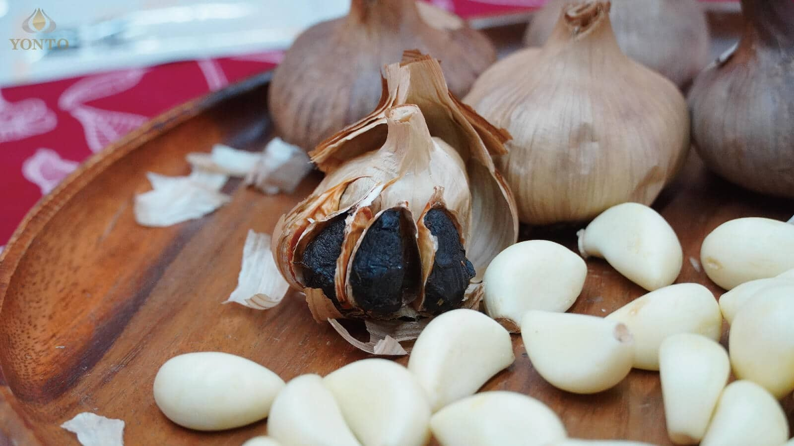

2022黑蒜頭秘密大公開！
提到大蒜，你會想到甚麼呢？廚房不起眼的角落放著蒜頭，烹煮食物香味的重要來源！你知道在古埃及時期就有記載蒜頭食用，是對抗疾病的重要妙方！
辛辣的蒜頭不適合直接吃，獨特的氣味讓人閉口交談，在高溫烹煮的過程中又會破壞蒜頭的營養成分。
黑蒜頭的出現，解決了蒜頭所有的困擾，日本紅回台灣的黑蒜頭，最佳的防疫產品，不口臭沒有難聞氣味，富含抗氧化能力對抗外在自由基，蒜頭的營養完整保留。
什麼是黑蒜頭？為什麼黑蒜頭這麼多人喜愛？
這個看似焦黑的蒜頭，不是蒜頭的新品種，更不是壞掉，是經由長時間控溫控濕環境由白色轉變為黑色。

生蒜刺激的蒜素轉化為無蒜臭、低刺激性的S-丙烯基半胱氨酸的黑蒜頭，營養升級增強體能、抗氧化更勝白大蒜。

蒜頭除了有抗氧化能力還有豐富的維他命C.E、多酚、硒、錳、銅等礦物質!想得到蒜頭裡面的大蒜素其實不簡單嗎？高溫烹煮就會破壞蒜頭本身的營養；直接吃要切片靜置15分鐘以及忍受蒜頭的辛辣！

現在想得到蒜頭的豐富營養不用這麼麻煩，從日本紅回台灣的養生食品–黑蒜頭，讓不敢吃蒜頭的人都可以輕鬆攝取營養！
黑蒜頭口感像是果乾，吃起來酸甜沒有濃厚蒜頭辛辣味；蛋白質轉化成為人體需要的18種胺基酸，人體可以快速吸收。
國內的學術有針對黑蒜頭進行研究，黑蒜的類黃酮和超氧化物歧化酶(SOD-LIKE)、硫化物皆高於生蒜，抗氧化活性更強。提醒您，隨著季節、成熟溫度和生長條件的波動，每一批的蒜頭營養都會有些許差異唷！
為什麼黑蒜頭是超級食物，黑蒜頭功效是什麼？
簡單的解釋超級食物，就是指對健康有益處的食物，而且富含營養！
蒜頭常出現在超級食物排行榜裡！因為富含胺基酸、維生素、礦物質和微量元素等，最特別的就是有機含硫化合物，但其特別的辛辣臭味卻讓很多人都避而遠之。
黑蒜頭的出現，解決了食用生蒜的困擾，那麼黑蒜頭到底怎麼來的呢？只要這三樣：蒜頭、溫度和時間。
溫度是製作黑蒜頭的重要關鍵，低溫才能將黑蒜頭營養保留極致。
過程中無需任何化學添加物！
- 酵母
- 糖
詠統用三個月的熟成時間，揮發性硫化物減少，討厭的蒜臭味已經完全去除，幫您留下最有用的
- SOD活性
- 胺基酸
- 鎂
- 鈣
- 多酚